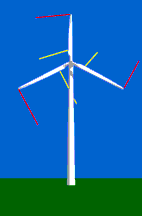

Rotor
Aerodynamics

 To study how the wind moves
relative to the rotor blades of a wind turbine, we have fixed
red ribbons to the tip of the rotor blades of our model wind
turbine, and yellow ribbons some 1/4 out the length of the blade
from the hub. We then let the ribbons float freely in the air
(in the cartoon we abstract from the air currents created by
the blades themselves, and the centrifugal force).
To study how the wind moves
relative to the rotor blades of a wind turbine, we have fixed
red ribbons to the tip of the rotor blades of our model wind
turbine, and yellow ribbons some 1/4 out the length of the blade
from the hub. We then let the ribbons float freely in the air
(in the cartoon we abstract from the air currents created by
the blades themselves, and the centrifugal force).
 The two images on this page give you one
view from the side of the turbine, and another view from the
front of the turbine.
The two images on this page give you one
view from the side of the turbine, and another view from the
front of the turbine.
 Since most wind turbines have constant rotational
speed, the speed with which the tip of the rotor blade moves
through the air (the tip speed) is typically some 64 m/s, while
at the centre of the hub it is zero. 1/4 out the length of the
blade, the speed will then be some 16 m/s.
Since most wind turbines have constant rotational
speed, the speed with which the tip of the rotor blade moves
through the air (the tip speed) is typically some 64 m/s, while
at the centre of the hub it is zero. 1/4 out the length of the
blade, the speed will then be some 16 m/s.
 The yellow ribbons close to the hub of the
rotor will be blown more towards the back of the turbine than
the red ribbons at the tips of the blades. This is obviously
because at the tip of the blades the speed is some 8 times higher
than the speed of the wind hitting the front of the turbine.
The yellow ribbons close to the hub of the
rotor will be blown more towards the back of the turbine than
the red ribbons at the tips of the blades. This is obviously
because at the tip of the blades the speed is some 8 times higher
than the speed of the wind hitting the front of the turbine.
Why
are Rotor Blades Twisted?
Rotor blades for large wind turbines are always twisted.
 Seen from the rotor blade, the wind will
be coming from a much steeper angle (more from the general wind
direction in the landscape), as you move towards the root of
the blade, and the centre of the rotor.
Seen from the rotor blade, the wind will
be coming from a much steeper angle (more from the general wind
direction in the landscape), as you move towards the root of
the blade, and the centre of the rotor.
 As you learned on the page on stall,
a rotor blade will stop giving lift, if the blade is hit at an
angle of attack which is too steep.
As you learned on the page on stall,
a rotor blade will stop giving lift, if the blade is hit at an
angle of attack which is too steep.
 Therefore, the rotor blade has to be twisted,
so as to acheive an optimal angle of attack throughout the length
of the blade. However, in the case of stall
controlled wind turbines in particular, it is important that
the blade is built so that it will stall gradually from the blade
root and outwards at high wind speeds.
Therefore, the rotor blade has to be twisted,
so as to acheive an optimal angle of attack throughout the length
of the blade. However, in the case of stall
controlled wind turbines in particular, it is important that
the blade is built so that it will stall gradually from the blade
root and outwards at high wind speeds.

|
Back | Home
| Forward |
© Copyright 2000 Soren Krohn.
All rights reserved.
Updated 29 August 2000
http://windpower.dk/tour/wtrb/rotor.htm